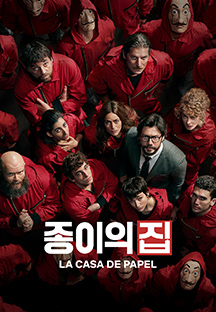
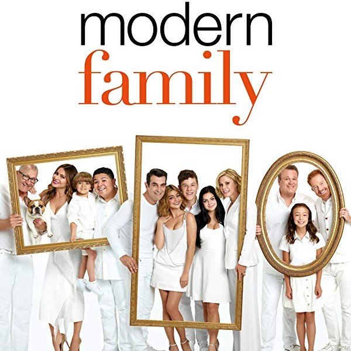
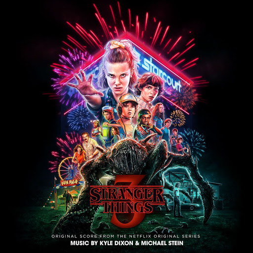

🎥 My Favorite NETFLEX 🎬

종이의집
LA CASA DE PAPEL

내맘대로 매긴 주관적 평점
⭐⭐⭐⭐
4점/5점
처음엔 스페인 억양이 강력한 편이라, 다소 어색할 수 있음! 하지만 시간 지나면 익숙해지고 각자 캐릭터에 몰입하게 된다. 몇몇 캐릭터들이 아주 답답하고 노답이지만... 처음엔 교수보고 저 미친놈은 뭐지 했지만 나중엔 멋있어 보인다. 영화 다 보고나면 나도 모르게 "벨라 차오 벨라차오 벨라 차오차오차오" 하게 된다 ㅎㅎ
가십걸
Gosship Girl
내맘대로 매긴 주관적 평점
⭐⭐⭐⭐⭐
5점/5점
"이구역의 미친년은 나야"의 바로 그 미드! 넷플릭스에서 곧 내려간다고 해서 꾸역꾸역 봤는데 아직도 안내려갔다. 역시 하이틴은 재밌지만 시즌 내내 내용이 너무 반복된다. 연애하고 의심하고 배신하고 질투하고 깨닫고 용서하고 역시 넌 나의 베프야!를 한 100번은 한거같다. 하지만 볼 수 밖에 없는 드라마. 캐릭터들이 너무 매력있다.
모던패밀리
Mordern Family

내맘대로 매긴 주관적 평점
⭐⭐⭐⭐⭐
5점
개인적으로 넷플에서 유명한 코디미류 드라마(프렌즈, 빅뱅이론)등은 그 방청객(?) 웃음소리가 너무 거슬리고 내용 자체가 과하다는 느낌이 들었는데 이건 진짜 담백한 미국식 유우머라서 좋다! 미국에 1도 가본적 없지만 미국의 여러 가족상?을 보여주는 듯하고 에피소드 하나하나 너무 재밌고 아무거나 골라봐도 꿀잼이다! 그리고 에피소드 한편당 러닝타임이 20분 내외라 가볍게 보기도 너무 좋다
오렌지이즈더뉴블랙
Orange Is The New Black

내맘대로 매긴 주관적 평점
⭐⭐⭐⭐⭐
5점/5점
여자교도소 내용. 소재도 자극적이고 내용은 더 자극적이다. 교도소가 배경이라 범죄는 당연하고 여러 인간상을 보여줘서 좋다. 그냥 이런저런 사람이 있다는 묘사만 있는게 아니라 미국의 교도소 운영, 민영화 등등 사회적인 내용도 많이 담고있어서 재미도 있지만, 생각할것도 좀 있는 드라마! 노출신이 많아서 그리 추천할만한 드라마는 아니만 나는 너무 재밌게봤다! 시즌 5정도에 좀 루즈해지는 느낌이 있었지만 완주했다!
기묘한 이야기
Strange Things

내맘대로 매긴 주관적 평점
⭐⭐⭐⭐⭐
5점/5점
기묘한 이야기는 이걸 보기전에도 하도 패러디도 많고 예능같은데서 꽤 들어본거라 오히려 거부감이 들었다. 근데 직접 보니 정말 기묘한 내용이었다. 예상과는 전혀 다른 괴물나오는 SF인데, 애기들 너무 귀엽고 연기도 찰지게 해서 볼맛난다. 시즌 4 기다리는중인데 올초에 나온다고 해놓고 왜 안나오는거야! 넷플릭스 드라마의 교과서 같은 드라마라 한번쯤은 보길, 근데 약간 호불호가 갈리는듯 하다.
made by Jisu
email : parkjisu6239@gmail.com